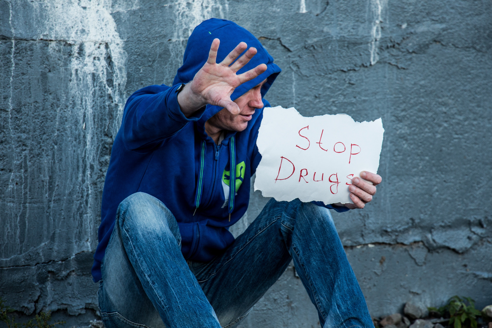
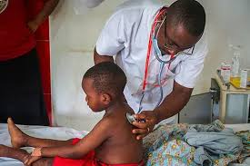
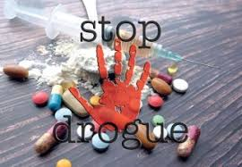

Nom : Dr. John Doe
Spécialité : Addictologie
Contact :+225- 05-14-03-47-10

Aide psychologique
Consultation gratuite
Contact :+225- 05-94-03-74-10

Sensibilisation drogue
Ateliers éducatifs
Contact :+225- 05-44-37-51-10
Conséquences du tabac sur l'homme
Environ 5 000 à 5 400 décès par an sont causés par le tabac en CI
Le tabac tue plus de 8 millions de personnes chaque année dans le monde
Environ 8,6 % de la population consomme du tabac (contre 14,7 % avant)
L’État dépense environ 28 milliards FCFA par an pour soigner les maladies liées au tabac
Conséquences de l'alcool l'homme
90 % des cancers du poumon sont liés au tabac.
25 % des maladies cardiaques sont causées par le tabac.
80 % des maladies respiratoires chroniques sont dues au tabac.
Le tabagisme passif cause plus de 1 million de décès chaque année.
Consequences de la Drogue
90 % des cancers du poumon sont liés au tabac
Augmente fortement les maladies cardiaques
Provoque des problèmes respiratoires chroniques
Peut causer des AVC (accidents vasculaires cérébraux)
Réduit l’espérance de vie de 10 à 15 ans